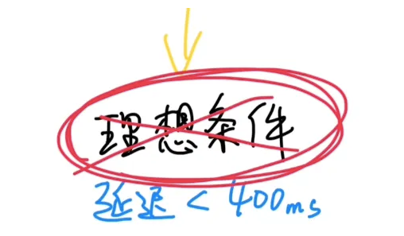

最近我发现，越来越多搞人工智能的公司，都在做同一件事情，就是让人工智能可以跟人类实时对话，就像人和人视频或者语音通话那样。
不管是国外的ChatGPT还是国内的豆包、文心一言、通义千问、讯飞星火等等，都毫无例外地在APP里做了实时对话的功能。微软公司也计划在年底推出AI实时语音对话功能。
因为大家都知道：
人类和AI的终极交互方式，一定不是现在这样以打字为主，而是像科幻电影里那样直接说话。

但是要想丝滑地实时语音对话，有一个问题必须要解决，就是：
延迟
人们手头的电脑计算能力还太弱，跑不动特别聪明的人工智能模型。现在稍微聪明一点的人工智能大模型，都得运行在云计算服务器里。
所以人和大模型实时对话的过程是这样的：

声音数据传到AI大模型所在的服务器，这需要一段时间。
大模型收到声音数据后，要先用一个算法，把声音转化成文字，这需要一段时间。
再用GPT这样的大语言模型，通过文字生成回复的文字，又需要一个时间。
再用这个文字合成一段它的语音，需要一个时间。
最后再把声音传回给你，还需要一个时间。
实际上步骤可能有些差别，但大概是这样。
虽然每个过程都只要几十到几百毫秒，但加起来可能就需要两三秒，甚至更长时间，这就会让对话不自然，听起来更像是一来一回的语音消息，而不是实时的通话。

那怎么降低延迟呢？
OpenAI的解决办法是，先缩短模型生成的时间，他们最新的GPT-4o大模型，可以直接用声音生成声音，等于把中间这几步简化成了一步，大大缩短了时间。

那剩下的这部分网络传输的延迟怎么降低呢？

这就得靠RTC实时通讯技术了。

RTC实时通讯技术的原理通俗解释起来也不复杂。
互联网的信息传输，有两种最主要的底层传输协议，一种叫TCP，一种叫UDP。
网上有一个梗图，形容TCP和UDP两种基础传输协议的区别，大概是这样：

你跟你朋友用文字发消息聊天，负责送信的这个邮递员就是「TCP协议」。它的特点是认真负责，优先确保消息完整无误地到达，即使多花一点时间也没有关系，这就是非实时通讯。

我们一般发微信消息，基本要延迟个一两秒才能收到，只不过大家一般感觉不太出来。
当你跟朋友视频或者语音通话的时候，一两秒的延迟可不行，为了保证延迟低于一秒，你们的画面和声音，就会被拆成无数个数据碎片，交给无数个叫「UDP协议」的闪送员。
他们分头赶往另一边，怎么快怎么来，到了另一边，再想办法拼凑成原来的声音和画面，到得慢的就不等了，弄丢几块也没有关系，总之优先确保快，确保低延迟。

实时通讯技术就是在用UDP这种「粗暴但快」的传输协议的基础上，再想尽一切办法去把声音和画面之类的数据在另一边还原出来，这样人们才可以实时语音或者视频对话。
像我们平常视频聊天、直播连麦，线上开会、游戏语音，用的都是RTC实时通讯技术。
那要怎么实现实时通讯技术呢？
市面上有一种开源的RTC方案叫WebRTC，是谷歌公司在2010年开源出来免费供大家使用，开发者们用它就可以很方便地实现实时通讯。

在理想条件下，WebRTC可以做到网络传输的延迟可以做到0.4秒以内。
但问题就是，网络环境这个东西，通常不太可能理想，尤其是用户量大了以后，什么情况都可能出现。

比如有的人手机就很流畅，比如有的人手机就很卡，有的人信号好，有的人信号差。

哪怕是OpenAI在发布会上做演示，也得给手机插一根线来确保网络不出问题。在实际的网络环境下，各种情况都可能会增加延迟，影响通话的稳定性和传输的质量。
那怎么办呢？通常有两个办法：
第一个办法：在开源技术的基础上，继续去做优化。但RTC技术这个东西是个慢功夫，只能像挤牙膏一样，这里优化一点，那里优化一点，慢慢挤。

第二个办法：找一个成熟的RTC服务商，用他们现成的服务。像OpenAI就是两个办法都在用。
一边开出一年大概两三百万元的工资招聘RTC工程师，一边用一个叫Livekit的初创公司提供的RTC服务。
用现成的RTC服务有一个非常大的好处，就是专业的RTC服务商，早就把很多该优化的地方都优化完了，各种能踩的坑也踩过了。

他们做了很多年「人和人」的实时通讯。现在只是换成了「人和AI」的实时通讯，过去的这些技术积累和优化的经验都可以沿用。

我们国内也有不少在RTC技术和经验方面，积累了很多年的公司。
比如声网。
声网的创始人赵斌，从一九九几年就开始做RTC技术，当年是号称世界头号网络会议软件Webex的创始工程师，也是国内最早一批火起来的实时通讯软件YY的技术负责人。

在网络那么差的年代，就做到了不卡、不掉、不延迟，技术之牛可想而知。
2014年他创办了声网以后，早就把各种网络不好、声音嘈杂，机型适配、跨地区等各种复杂情况，都优化了无数遍了。
而且声网还在全球各地建了200多个数据中心，组成了一个实时传输网络。这条路堵了，他们可以立刻切换到另一条最优的路径上，确保通信质量。

在不跨地区的情况下，他们可以做到延迟低于100毫秒。在跨区域的情况下比如从中国到美国，可以做到200-300毫秒。
所以像b站、小米、小红书这些公司，很多年前就在用声网的RTC技术。

大模型兴起以后，像声网这样的RTC服务商，也在想办法针对大模型做优化，比如在大模型的服务器附近部署传输节点，来降低延迟。

再比如以前主要是传输声音和画面，现在他们就在考虑在人们的手机上，就直接把声音信号转化成大模型可以理解的Tokens再传过去，这样就能减少对带宽的需求，降低云端的成本。

所以回到刚开始那个话题：
「延迟」，会成为人类和AI实时对话的最大阻碍吗？
我觉得现在的确是，但未来肯定不是。
一是因为人工智能大模型以后不一定非得放在云端服务器上跑，也许以后用手机电脑就能运行「足够聪明」的人工智能。
二是因为人类工程师们从未，以后也不会停止和延迟战斗。
但凡人们有和AI实时通话的需求，需求足够强烈，延迟背后的技术问题就都是可解的。